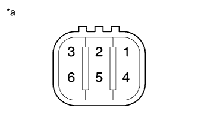
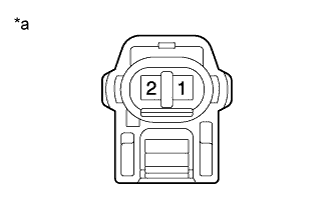

КОРПУС ДРОССЕЛЬНОЙ ЗАСЛОНКИ ДИЗЕЛЬНОГО ДВИГАТЕЛЯ > ПРОВЕРКА |
| 1. INSPECT DIESEL THROTTLE BODY |
Inspect the throttle control motor.
|  |
Measure the resistance according to the value(s) in the table below.
| Tester Connection | Condition | Specified Condition |
| 1 - 2 | 20°C (68°F) | 18 to 22 Ω |
| 2 - 3 | 20°C (68°F) | 18 to 22 Ω |
| 4 - 5 | 20°C (68°F) | 18 to 22 Ω |
| 5 - 6 | 20°C (68°F) | 18 to 22 Ω |
| *a | Component without harness connected (Diesel Throttle Body) |
Inspect the throttle open switch.
|  |
Measure the resistance according to the value(s) in the table below.
| Tester Connection | Condition | Specified Condition |
| 1 - 2 | Fully open | Below 1 Ω |
| 1 - 2 | Fully close | 10 kΩ or higher |
| *a | Component without harness connected (Diesel Throttle Body) |